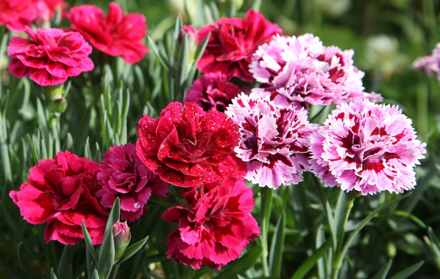
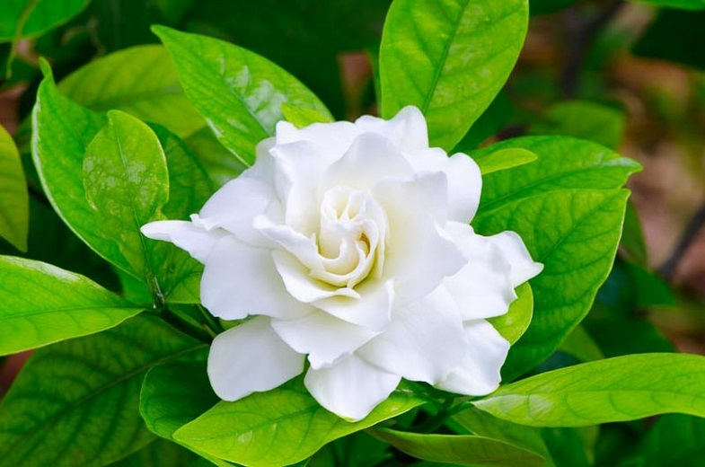
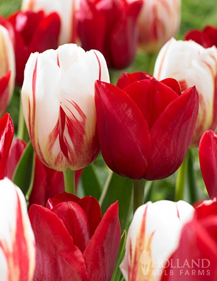
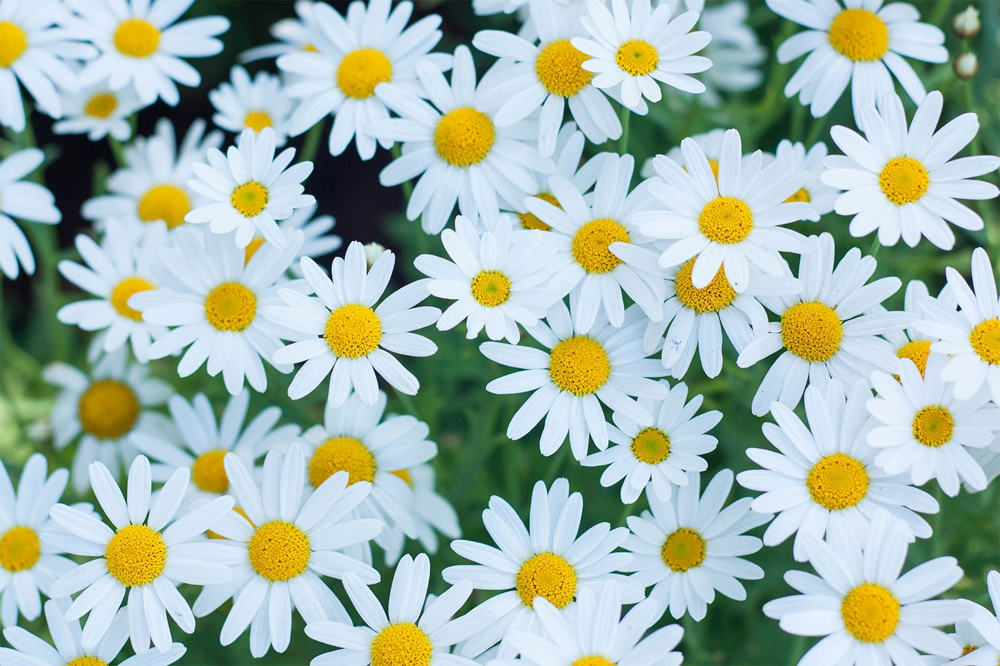
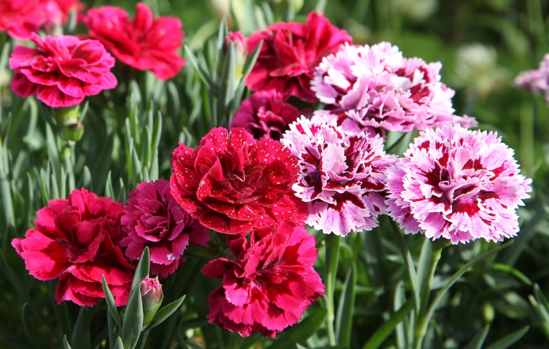
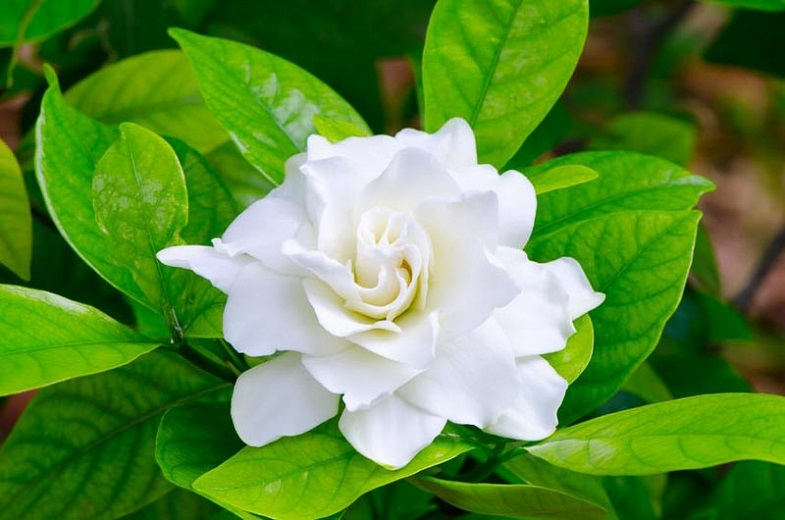
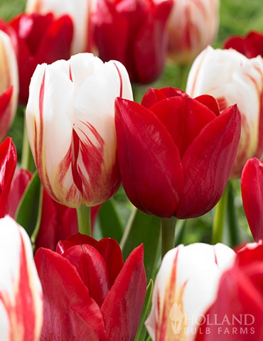
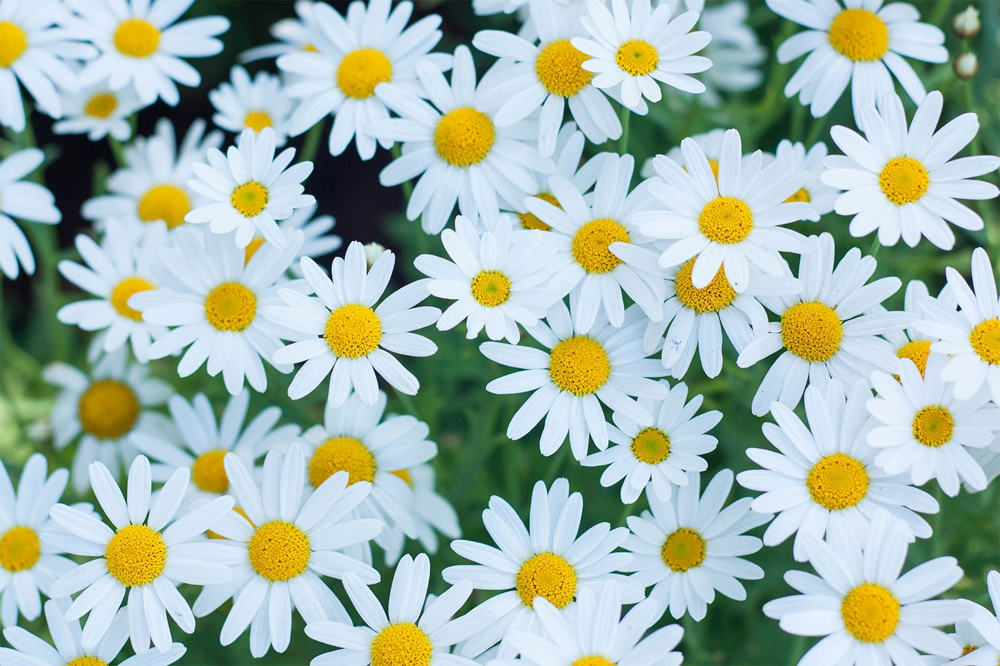

Types of Flowers
Aster
Daisy
Tulip
Gardenia
Carnation
Aster
Genshin Impact is an open-world action role-playing game that allows the player to control one of four interchangeable characters in a party. Switching between characters can be done quickly during combat, allowing the player to use several different combinations of skills and attacks.[4] Characters may have their strengths enhanced in various ways, such as increasing a character's level and improving artifacts and the weapons that the character equips. In addition to exploration, the player can attempt various challenges for rewards. Scattered across Teyvat are bosses and challenges that reward highly valuable resources, such as Stormterror and the Electro Hypostasis, but claiming them uses up a currency called resin, which slowly regenerates over time. Completing these challenges grants the player progress towards increasing their Adventure Rank, which in turn unlocks new quests, challenges, and raises the World Level. The World Level is a measure of how strong the enemies within the world are and the rarity of rewards that defeating them gives. The player can control their character and perform actions such as running, climbing, swimming, and gliding which are limited by stamina. Some characters possess abilities that can alter the environment, such as freezing water to create a path that can aid the player in traversing terrain.[4] Many teleportation nodes exist throughout the world that players can warp to, and statues known as the Statues of The Seven can heal and revive characters and provide benefits such as increasing player stamina. Items such as food and ore may be procured from the open world, while enemies and treasure chests drop other types of resources that may be used in enhancing a character's strength. Players can obtain food from hunting animals, gathering fruit and vegetables, or purchasing them from a store. Ingredients that can be cooked into meals that regenerate characters' health or boost various statistics. Players can also procure ore that can be refined and then used to enhance weapon strength or create weapons. An elemental reaction between two elements, Pyro and Electro, results in "Overloaded", creating an explosion. Each character has two unique combat skills: an elemental skill and an elemental burst. The elemental skill can be used at any time except for the cooldown period immediately after use. In contrast, the elemental burst has an energy cost, requiring the user to amass sufficient elemental energy by defeating enemies or inflicting elemental status effects. Characters have control over one of seven natural elements: Cryo, Dendro, Pyro, Hydro, Anemo, Electro and Geo, which correspond to ice, nature, fire, water, air, electricity, and earth respectively. These elements can interact in different ways; for example, if a Hydro attack hits a target, the enemy will be inflicted with the "Wet" status effect, and if they are hit with a Cryo attack, it will inflict "Cold". These two status effects combine into the "Frozen" status effect, temporarily preventing the target from performing any actions or until the player deals enough physical damage to the enemy. Switching between characters during combat and executing those skills allows those elemental interactions to take place. Certain elemental abilities may be required to solve puzzles within the overworld. A multiplayer mode is available in the form of co-op. Up to 4 players can play together in the overworld and join domains. Player matching can either be done by requesting to connect with another player. If the player wishes to clear a domain with other players, they will be automatically matched up with others looking to tackle the same objective. The game features cross-platform play, so players on any platform can play with each other. By completing quests to advance the story, the player can unlock five additional playable characters, and more characters can be obtained via a gacha mechanic and in-game events. Several premium in-game currencies, obtainable through in-app purchases and playing the game, can be used to obtain characters and weapons through the gacha system. A pity system guarantees that the player will receive rare items after a set number of draws.
Daisy
Cookie Run is a series of online mobile running games, with the most recent, non spin-off game being Cookie Run: OvenBreak, which features an ever-expanding collection of cookies, support pets, and useful treasures, all bearing a different number of points depending on the combination used. Cookie Run at the moment includes 6 modes, with other modes that will come and go for events. Breakout is the main mode of Cookie Run, where anywhere from 3 to 15 cookies run to escape the oven. Every relay adds more points onto the combined score, which is used to determine a player's rank for a certain period of time. Each rank will earn more crystals as well as legendary cookies if players reach Diamond or Rainbow Ranking at the end of the running period. In Cookie Trials, players form teams from available collected cookies collected and try to earn points to move up the ranks, going from Bronze to Diamond. Rewards are given for climbing ranks. When a new cookie comes out with a Cookie Trial, players will receive a New Cookie Cup, which gives players extra rewards for each rank earned, such as more crystals or chests to be used in the game's Gacha to unlock new cookies, pets, or treasures. Trophy Race is an online multiplayer mode where up to 10 global players compete for the highest score to earn trophies. Trophies are used to unlock new lands up to Champion's League. The Champion's League is a mode where the most skilled players run in 3 arenas, to earn ranks at the end of a season. By running in the Champion's League, players earn Medals, which can be exchanged for items, cookies, costumes, pets, or treasures. The Champion's League also includes the Hall of Fame, where players pay tribute to the highest ranking players globally for free rewards such as crystals, rescue tickets, or coins. In the Island of Memories, cookies run through the memories of "Hero Cookie", "Cheerleader Cookie", and "Dr. Wasabi and Mustard Cookie", with new types of boss fights for each Island. Every level played awards stars based on completing certain objectives, which are used to unlock items such as costumes, crystals, coins, and other islands and cookies. Cookie Run's Guild Run, is a mode where guilds, or interactive groups of global players, can run, cook, and explore different regions together. Guild Runs are split into competitive seasons, where four Guilds run against each other in different lands bearing different bonuses each. The rank in Guild Run determines a guild's rank, which rewards players more or less depending on their participation, and the rank itself. The game has additional modes such as Friendly Run or Custom Run that are added for brief periods of time as events. The newest mode in Cookie Run, in this mode, players will run through stages and collect some pieces of story to read about Gingerbrave and his friends' main adventure. You can earn from 1-3 stars each run and collect them to count on the Chapter's Rewards which are crystals. After you reach 3 stars in a specific stage, you can get better ingredients from Pouches such as ingredients to level up your Magic Candies and ingredients to craft some items in Laboratory.
Tulip
The main gameplay for Fortnite Battle Royale follows the standard format for the battle royale genre. The game normally is played either with each player on their own, or in a squad of two to four players, with up to 100 players participating each round. The round starts with players, weaponless, skydiving from floating buses ("Battle Bus") then deploying a glider onto a region of land. The island's fixed layout includes several landmarks and locations (named in an alliterative fashion, such as "Lazy Lake", "Pleasant Park", and "Retail Row") that ab re mostly ghost towns during matches, while a random distribution of weapons, shields, and other combat support features can be found by searching chests scattered in buildings and other sites. The primary goal is to be the last player or team alive by eliminating or avoiding other players. When playing in solo modes, players are immediately eliminated when they exhaust their health. In squad modes, downed players can crawl around while losing health; they can be eliminated immediately by an opponent or revived by a squadmate to help them up. Initially, when the game launched, eliminated players were out of the match, but starting with updates in April 2019, squadmates can attempt to respawn a downed player at various "Reboot vans" scattered around the map, which are few and far between and in the open, making it a risk to respawn a squadmate.[2] Over time, the game's safe zone (representing the eye of a storm), decreases in size, and players caught outside the zone will take damage. This directs the surviving players into tighter spaces, forcing player encounters. Supply drops will spawn in random locations during a match, providing random weapons and items. Like in the original Fortnite game, Fortnite Battle Royale is primarily played in a third-person perspective. Fortnite Battle Royale's primary distinction from other battle royale games is the building system, which originated from the original Fortnite survival game. Nearly all objects in the environment can be destroyed and harvested for materials (wood, stone, and metal), which can then be used to build fortifications of limited durabilities, such as walls, ramps, floors, and roofs, which can be used to help traverse the map, protect the player from gunfire, or slow down progression of other players. Weaker pieces can be destroyed in a few hits, but can be built quickly, while stronger pieces can withstand more damage, but take longer to build. The game also revolves around players eliminating their opponents to be the last one standing. The game is free-to-play, supported by microtransactions that allow players to buy "V-Bucks," the game's internal currency. V-Bucks are also shared with the main Fortnite: Save the World game, which offers players the opportunity to earn V-Bucks by completing missions or daily quests.[3] V-Bucks can then be used to buy cosmetic improvements to the player (outfits, pickaxes, gliders, backblings, and emotes). The game is run in chapters with a number of seasons, each season lasting about 10 weeks each. Each season introduces an exclusive set of cosmetic items that can be obtained. These are offered through a dual-track battle pass, which features a number of tiers that players climb through by earning experience through completing in-game objectives, while acquiring cosmetic rewards or other items in the process. Each player has access to the "free" track of the Battle Pass, which offers fewer cosmetics that can be earned by clearing multiple tiers, while players can also purchase the Pass' "premium" track with V-Bucks,[4] which offers more challenges and grants prizes for every tier the player advances. Players can use V-Bucks to purchase tiers as well once they have bought the Battle Pass.[5] Starting in December 2020, Epic added the "Fortnite Crew" monthly subscription plan; those on the plan gain access to the latest Battle Pass, a monthly allocation of V-Bucks, and access to exclusive cosmetics only available to subscribers.[6] Since release, Epic Games has added more features, such as new weapon and items and makeshift vehicles such as shopping carts and golf carts. Epic is also able to deploy hotfixes to the game to adjust aspects like weapon attributes and distribution, pushing these out in minutes if necessary should they or players discover critical issues or glitches, as well as removing older or not well received items from the game in a process called "vaulting".[7][8] With the release of the standalone Fortnite Creative gameplay mode in December 2018, an area of the Fortnite Battle Royale map called "The Block" featured a rotating selection of user-made creations developed in Creative mode and approved by Epic.[9] A "Battle Lab" mode was added in December 2019 for players to create their own custom battle royale games.[10] In April 2020, a new "Party Royale" mode was added, taking place on a small map where combat and construction was disabled though non-lethal gameplay items can be acquired like paint guns and vehicles; this map was aimed to be used as a social space, as well as to host in-game events like concerts.[11] Prior to September 2019, Fortnite did not have specialized matchmaking, outside of platform and regional limits. With an upcoming patch, the game introduced skill-based matchmaking, based on internal metrics that judge a player's skill in the game. Further, with Chapter 2 Season 1, the game will add special matches against computer-controlled bots to help players practice the game.
Gardenia
Minecraft is a 3D sandbox game that has no specific goals to accomplish, allowing players a large amount of freedom in choosing how to play the game.[20] However, there is an achievement system, known as "advancements" in the Java Edition of the game, and "trophies" on the PlayStation ports.[22] Gameplay is in the first-person perspective by default, but players have the option for third-person perspective.[23] The game world is composed of rough 3D objects—mainly cubes and fluids, and commonly called "blocks"—representing various materials, such as dirt, stone, ores, tree trunks, water, and lava. The core gameplay revolves around picking up and placing these objects. These blocks are arranged in a 3D grid, while players can move freely around the world. Players can "mine" blocks and then place them elsewhere, enabling them to build things.[24] Many commentators have described the game's physics system as unrealistic.[25] The game also contains a material known as redstone, which can be used to make primitive mechanical devices, electrical circuits, and logic gates, allowing for the construction of many complex systems.[26]The game world is virtually infinite and procedurally generated as players explore it, using a map seed that is obtained from the system clock at the time of world creation (or manually specified by the player).[27][28][29] There are limits on vertical movement, but Minecraft allows an infinitely large game world to be generated on the horizontal plane. Due to technical problems when extremely distant locations are reached, however, there is a barrier preventing players from traversing to locations beyond 30,000,000 blocks from the center.[i] The game achieves this by splitting the world data into smaller sections called "chunks" that are only created or loaded when players are nearby.[27] The world is divided into biomes ranging from deserts to jungles to snowfields;[30][31] the terrain includes plains, mountains, forests, caves, and various lava/water bodies.[29] The in-game time system follows a day and night cycle, and one full cycle lasts 20 real-time minutes. When starting a new world, players must choose one of five game modes, as well as one of four difficulties, ranging from peaceful to hard. Increasing the difficulty of the game causes the player to take more damage from mobs, as well as having other difficulty-specific effects. For example, the peaceful difficulty prevents hostile mobs from spawning, and the hard difficulty allows players to starve to death if their hunger bar is depleted.[32] Once selected, the difficulty can be changed, but the game mode is locked and can only be changed with cheats. New players have a randomly selected default character skin of either Steve or Alex,[33] but the option to create custom skins was made available in 2010.[34] Players encounter various non-player characters known as mobs, such as animals, villagers, and hostile creatures.[35] Passive mobs, such as cows, pigs, and chickens, can be hunted for food and crafting materials. They spawn in the daytime, while hostile mobs—including large spiders, skeletons, and zombies—spawn during nighttime or in dark places such as caves. Some hostile mobs, such as zombies, skeletons and drowned (underwater versions of zombies), burn under the sun if they have no headgear.[36] Other creatures unique to Minecraft include the creeper (an exploding creature that sneaks up on the player) and the enderman (a creature with the ability to teleport as well as pick up and place blocks).[37] There are also variants of mobs that spawn in different conditions; for example, zombies have husk variants that spawn in deserts.
Carnation
Genshin Impact is an open-world action role-playing game that allows the player to control one of four interchangeable characters in a party. Switching between characters can be done quickly during combat, allowing the player to use several different combinations of skills and attacks.[4] Characters may have their strengths enhanced in various ways, such as increasing a character's level and improving artifacts and the weapons that the character equips. In addition to exploration, the player can attempt various challenges for rewards. Scattered across Teyvat are bosses and challenges that reward highly valuable resources, such as Stormterror and the Electro Hypostasis, but claiming them uses up a currency called resin, which slowly regenerates over time. Completing these challenges grants the player progress towards increasing their Adventure Rank, which in turn unlocks new quests, challenges, and raises the World Level. The World Level is a measure of how strong the enemies within the world are and the rarity of rewards that defeating them gives. The player can control their character and perform actions such as running, climbing, swimming, and gliding which are limited by stamina. Some characters possess abilities that can alter the environment, such as freezing water to create a path that can aid the player in traversing terrain.[4] Many teleportation nodes exist throughout the world that players can warp to, and statues known as the Statues of The Seven can heal and revive characters and provide benefits such as increasing player stamina. Items such as food and ore may be procured from the open world, while enemies and treasure chests drop other types of resources that may be used in enhancing a character's strength. Players can obtain food from hunting animals, gathering fruit and vegetables, or purchasing them from a store. Ingredients that can be cooked into meals that regenerate characters' health or boost various statistics. Players can also procure ore that can be refined and then used to enhance weapon strength or create weapons. An elemental reaction between two elements, Pyro and Electro, results in "Overloaded", creating an explosion. Each character has two unique combat skills: an elemental skill and an elemental burst. The elemental skill can be used at any time except for the cooldown period immediately after use. In contrast, the elemental burst has an energy cost, requiring the user to amass sufficient elemental energy by defeating enemies or inflicting elemental status effects. Characters have control over one of seven natural elements: Cryo, Dendro, Pyro, Hydro, Anemo, Electro and Geo, which correspond to ice, nature, fire, water, air, electricity, and earth respectively. These elements can interact in different ways; for example, if a Hydro attack hits a target, the enemy will be inflicted with the "Wet" status effect, and if they are hit with a Cryo attack, it will inflict "Cold". These two status effects combine into the "Frozen" status effect, temporarily preventing the target from performing any actions or until the player deals enough physical damage to the enemy. Switching between characters during combat and executing those skills allows those elemental interactions to take place. Certain elemental abilities may be required to solve puzzles within the overworld. A multiplayer mode is available in the form of co-op. Up to 4 players can play together in the overworld and join domains. Player matching can either be done by requesting to connect with another player. If the player wishes to clear a domain with other players, they will be automatically matched up with others looking to tackle the same objective. The game features cross-platform play, so players on any platform can play with each other. By completing quests to advance the story, the player can unlock five additional playable characters, and more characters can be obtained via a gacha mechanic and in-game events. Several premium in-game currencies, obtainable through in-app purchases and playing the game, can be used to obtain characters and weapons through the gacha system. A pity system guarantees that the player will receive rare items after a set number of draws.
 






